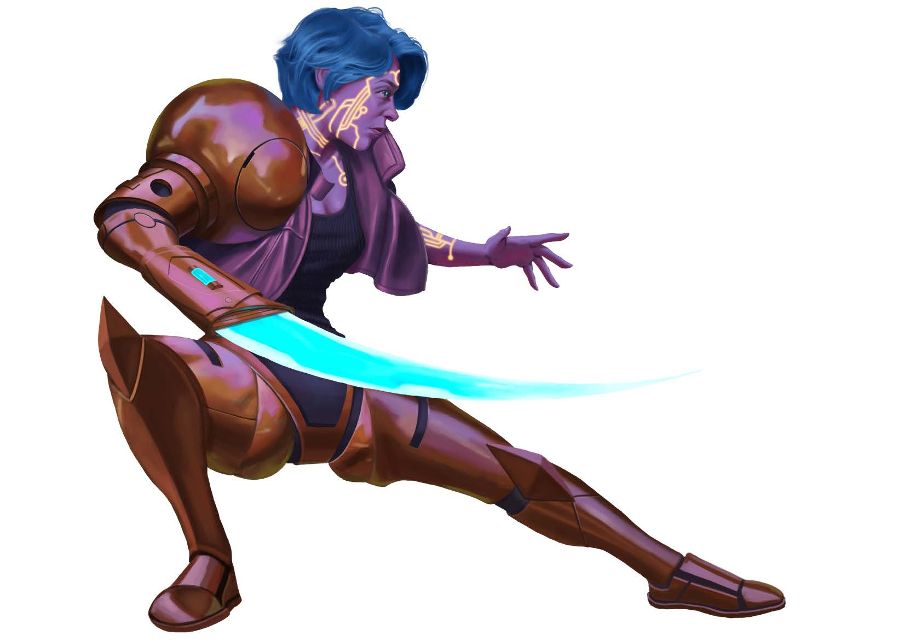

| Aggiungi +1 alle seguenti statistiche: (Attributi +): Destrezza, Intelligenza, Un aumento libero da assegnare. | Sottrai -1 alle seguenti statistiche: Carisma (Inibitori emotivi di serie). |
LANGUAGES: Comune.
Lingue aggiuntive pari a 1 + il tuo modificatore di Intelligenza (se positivo). Scegli liberamente dalla lista dei linguaggi comuni del sistema.
Visione Crepuscolare: Vedi nella luce fioca come se fosse luce intensa, ignorando la condizione occultato dovuta alla scarsità di illuminazione.
Costruito: Il tuo corpo sintetico resiste ai malanni meglio di un organismo biologico. Guadagni un bonus di circostanza di +1 ai tiri salvezza contro malattie, veleni e radiazioni. Possiedi sempre le protezioni ambientali base attive.
Il lignaggio di un androide spesso riflette lo scopo per cui è stato originariamente creato o il modo in cui ha adattato il proprio corpo per soddisfare al meglio la sua vita attuale.
Il tuo corpo è stato creato da una potente intelligenza artificiale per interfacciarsi con altre macchine. Possiedi dettagli insoliti (lineamenti incredibilmente simmetrici, dita extra o doppie pupille).
Tu o le tue iterazioni precedenti avete modificato il vostro telaio per renderlo altamente compatibile con i potenziamenti delle armature commerciali.
Il tuo corpo si connette fluidamente con i sistemi esterni. Ottieni la comunicazione a onde corte (shortwave) wireless entro 9 metri con macchine o costrutti tech.
Molte anime hanno abitato questo guscio prima di te. La prima volta in un giorno in cui perdi la condizione morente (dying), non guadagni la condizione ferito (wounded).
Hai studiato a fondo le origini e la storia del tuo popolo sintetico.
I tuoi processori emotivi inibiti ti rendono quasi immune ai condizionamenti psicologici.
Possiedi una cavità cava nascosta nell'avambraccio per occultare piccoli oggetti.
Attingi ai dati archiviati delle anime precedenti che hanno occupato il tuo corpo.
Frequenza: 1 volta all'ora | Innesco: Tenti un'azione di abilità (max 3 azioni).
I chip visivi oculari sono stati calibrati per scansionare l'assenza totale di luce.
Il tuo processore centrale calcola le minacce ambientali a velocità ultra-quantistica durante le fases di attrito e di navigazione.
I sistemi di puntamento predicono matematicamente i movimenti di fuga dei nemici agganciati.
Sei programmato per iniettare stringhe di codice corrotte nei nemici artificiali o nei droni.
Prerequisiti: Nanite Surge
I polmoni sintetici riciclano internamente i composti gassosi isolandoti dal vuoto o dai gas tossici.
Prerequisiti: Nanite Surge
Frequenza: 1 volta al giorno
Prerequisiti: Nanite Surge
Frequenza: 1 volta al giorno | Innesco: Stai per tentare un tiro di recupero mentre sei morente.
Prerequisiti: Lignaggio Artificial Scion o Networked Android
Baluardi logico-matematici blindano il tuo nucleo di memoria da manomissioni mentali ed esoteriche.
Frequenza: 1 volta al giorno